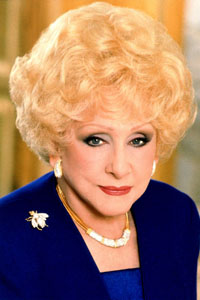

Mary Kay Ash, born Mary Kathlyn Wagner in Hot Wells, Harris County, Texas,
was the daughter of Edward Alexander and Lula Vember Hastings Wagner. Her mother
was trained as a nurse and later became a manager of a restaurant in
Houston. Ash attended Dow Elementary School and Reagan High School in Houston,
and graduated in 1934.
Ash married Ben Rogers at age 17. They had two children, Ben Jr. and Richard
Rogers. While her husband served in World War II, she sold books door-to-door.
After her husband's return in 1945, they divorced. Ash later had her only
daughter, Marylin Reed.
Ash went to work for Stanley Home Products.Frustrated
when passed over for a promotion in favor of a man that she had trained, Ash
retired in 1963 and intended to write a book to assist women in business.
The
book turned into a business plan for her ideal company, and in the summer of
1963, Mary Kay Ash and her new husband, Mel Ash, planned to start Mary Kay
Cosmetics.
However, one month before Mary Kay and Mel Ash started Beauty by Mary
Kay, as the company was then called, Mel died of a heart attack.One month after
Mel's death on September 13, 1963 when she was 45 years old with a $5,000
investment from her oldest son, Ben Rogers, Jr. and with her young son, Richard
Rogers taking her late husband's place, Ash started Mary Kay Cosmetics. The
company started its original storefront operation in Dallas.
Ash was widely respected. She considered the Golden Rule the founding principle
of Mary Kay Cosmetics and the company's marketing plan was designed to allow
women to advance by helping others to succeed. She advocated "praising people to
success" and her slogan "God first, family second, career third" expressed her
insistence that the women in her company keep their lives in good balance. Mary
Kay Ash died in Dallas, Texas November 22, 2001.
Both during her life and posthumously, Ash received numerous honors from
business groups, including the Horatio Alger Award. Ash was inducted into
the Junior Achievement U.S. Business Hall of Fame in 1996. A long-time
fundraiser for charities, she founded the Mary Kay Ash Charitable Foundation to
raise money to combat domestic violence and cancers affecting women.
Ash served
as Mary Kay Cosmetics' chairman until 1987, when she was named Chairman
Emeritus. Fortune magazine recognized Mary Kay Inc. with inclusion in "The 100
best companies to work for in America." The company was also named one of the
best 10 companies for women to work. Her most recent acknowledgements were the
"Equal Justice Award" from Legal Services of North Texas in 2001, and "Most
Outstanding Woman in Business in the 20th Century" from Lifetime Television in
1999.
Ash and her partners, which included her son, Richard, took the company public
in 1968. In 1985, the company's board decided to take the company private again
after seventeen years as a public company. Ash remained active in Mary Kay
Cosmetics, Inc. until suffering a stroke in 1996. Richard Rogers was named CEO
of Mary Kay Cosmetics, Inc. in 2001. At the time of Ash's death, Mary Kay
Cosmetics had over 800,000 representatives in 37 countries, with total annual
sales over $200 million. As of 2014, Mary Kay Cosmetics has more than 3 million
consultants worldwide and wholesale volume in excess of 3 billion. Mary Kay
herself was honored as a leading female entrepreneur in American history.